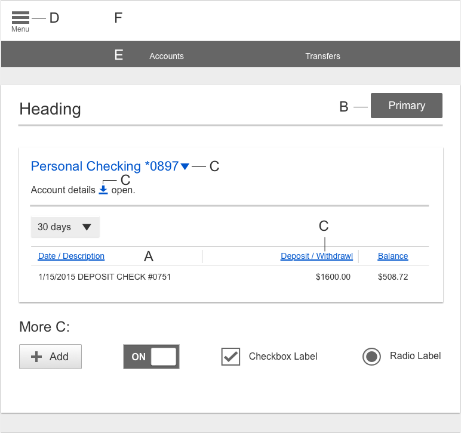
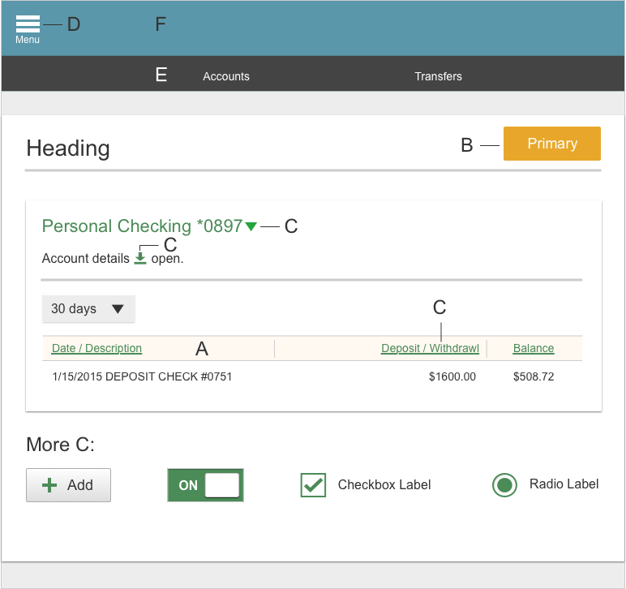

Branding
Financial institutions are allowed to select a primary accent color for online banking. It must meet the WCAG contrast ratio for AA compliance with accessibility guidelines. The default color for links & icons is #0055CC. You can test color compliance at this site: http://snook.ca/technical/colour_contrast/colour.html
Color for A:
Color for B:
Color for C:
Color for D:
Color for E:
Color for F:
Default example

FI color example
